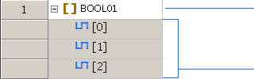
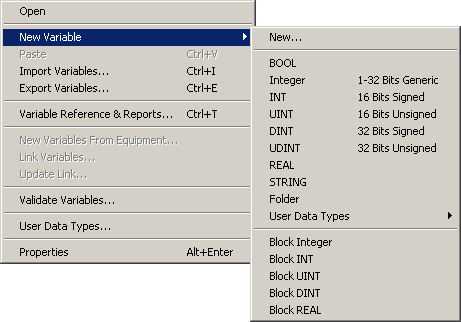
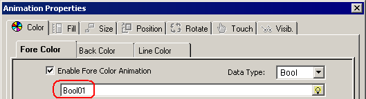
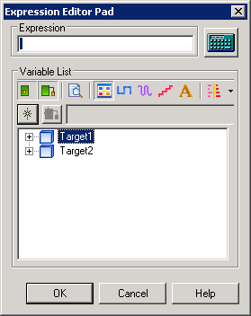
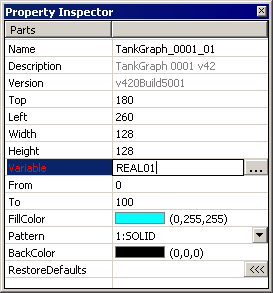

|
|
|
|
|
|
|
|
You can create variables in:
After you create one or more variables, you can validate your variables to ensure that the variables you created have no errors. This operation only validates the variables and does not validate the target. For more information on how to validate your project, see Section 25.2, Checking for Errors Before Downloading.

For one target machine, you can create a maximum of 8000 variables or 12000 variables depending on the target type. For more information, see Appendix 4 Run-Time Specifications. Included in the variable count are variables, system variables, variable array elements and the array placeholder, structure variable elements and the structure placeholder, and folder variable elements and the folder placeholder.
For example, the following is a variable array.
|
 |
Array Placeholder = 1 |
|
Array Elements = 3 |
The total count for an array with three array elements is four: one for the array placeholder and one for each array element.
A block variable adds just 1 to the variable count, even though it's associated with multiple device addresses.
System variables are not included as part of the variable count.
The maximum number of variables you can use on a single panel is 800.
Do one of the following:
Right-click the Variable's node and select New Variable.

Click  in the Variable's spreadsheet window.
in the Variable's spreadsheet window.
Right-click anywhere inside the Variable Editor and select New.
In the Basic Properties tab, set the Variable Name, Description, Data Type, Array Dimensions, and the Data Source properties. See Section 6.2.3, Variable Properties for more information.
Click OK to add the new variable to the variable list.
You can create variables in Variable or Expression fields, which are available in dialog boxes such as Animation Properties, Toolchest Properties, and the Property Inspector.
In the Variable or Expression field in a dialog box or object properties, type the variable name.


If the variable exists, the variable name displays in black. If the variable does not exist, the variable name displays in red.
Or, to create a variable in the Expression Editor, click  in the variable list to display the New Variable dialog box.
in the variable list to display the New Variable dialog box.

Or, to create a variable in the Property Inspector, enter a name in the Variable property, and press Enter.

In the New Variable dialog box that is displayed, set the properties.
For more information on the properties, see Section 6.2.3, Variable Properties.
Click OK to add this variable under the Target node.
To validate your variables:
Right-click the Variables node and select Validate Variables.
The Feedback Zone opens and displays messages about the variable validation process.